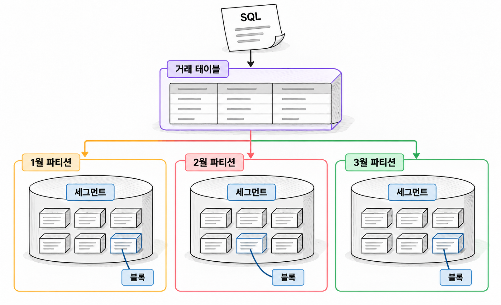
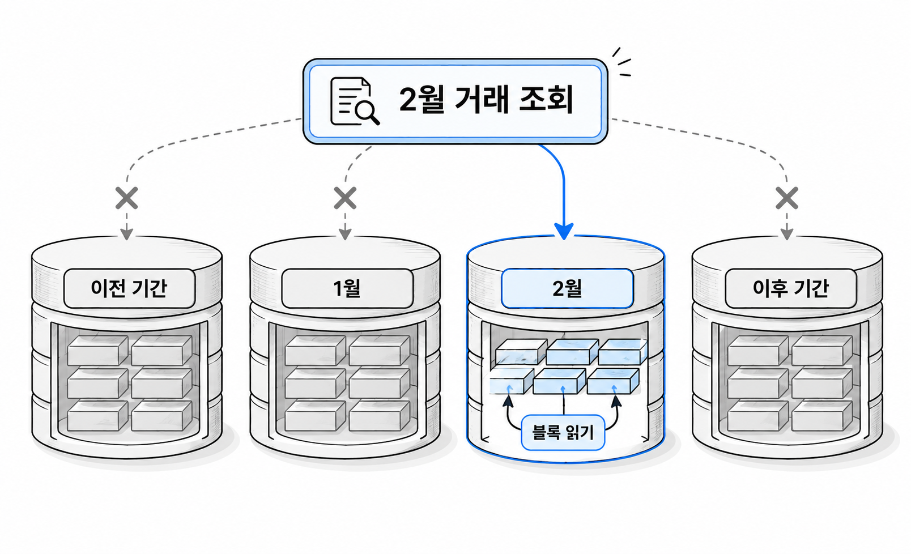

19장. 파티셔닝과 파티션 프루닝이란?
1. 파티셔닝의 목적과 저장구조
1.1 성능·보관 기간·유지관리 요구
파티셔닝(partitioning)은 하나의 테이블을 일정한 기준에 따라 여러 부분으로 나누는 방법입니다. 테이블 파티셔닝에서는 컬럼 구성을 유지하면서 행을 나눕니다. 애플리케이션에서는 하나의 테이블 이름으로 조회합니다.
예를 들어 거래 테이블을 거래일시 기준으로 월별로 나눌 수 있습니다. 1월 거래와 2월 거래는 서로 다른 파티션에 저장됩니다. SQL에서는 같은 거래 테이블을 사용합니다.
파티셔닝을 검토하는 이유는 조회 성능을 높이고 데이터를 관리하기 위해서입니다.
| 요구 | 파티셔닝으로 얻으려는 효과 | 확인할 조건 |
|---|---|---|
| 최근 한 달 거래 조회 | 다른 달의 저장공간을 읽지 않기 | 조회 조건에 거래일시가 있는가 |
| 보관 기간이 지난 거래 제거 | 기간별로 데이터를 관리하기 | 제거 기준과 파티션 경계가 맞는가 |
| 월별 데이터 적재와 점검 | 작업 대상을 특정 기간으로 한정하기 | 작업이 해당 기간 안에서 끝나는가 |
큰 테이블을 나눈다고 조회가 빨라지는 것은 아닙니다. 월별로 나눈 테이블에서도 날짜 조건 없이 전체 거래를 집계하면 모든 월을 읽어야 합니다. 파티셔닝의 성능 효과는 불필요한 파티션을 제외할 수 있는지에 달려 있습니다.
일반적인 단일 단계 힙 테이블 파티셔닝에서는 파티션마다 별도 세그먼트를 사용합니다. 각 세그먼트는 익스텐트와 블록으로 구성됩니다. 파티션을 나눠도 실제 데이터를 읽는 단위는 여전히 블록입니다. 세그먼트 생성이 지연된 빈 파티션에는 아직 저장공간이 할당되지 않을 수도 있습니다.

이 장의 생성 예제는 파티셔닝을 사용할 수 있는 Oracle Database 21c 환경을 전제로 합니다. 2장에서 다룬 에디션과 기능 사용 조건을 먼저 확인합니다. 실습 계정에는 테이블 생성 권한과 저장공간 할당량이 필요합니다.
1.2 파티션 키와 데이터 분포
파티션 키(partitioning key)는 행을 어느 파티션에 저장할지 결정하는 컬럼 또는 컬럼 조합입니다. 기본키가 행을 구별한다면, 파티션 키는 행의 저장 위치를 결정합니다. 두 키가 반드시 같을 필요는 없습니다.
거래번호가 기본키이고 거래일시가 파티션 키인 설계를 생각해 봅시다. 거래번호만으로 한 건을 찾는 요청에는 날짜별 분할이 직접적인 도움이 되지 않을 수 있습니다. 반면 특정 달의 거래를 읽는 요청에는 날짜별 분할이 유리합니다.
파티션 키를 고를 때는 조회 조건과 보관 기준을 함께 봅니다.
| 후보 컬럼 | 유리한 요구 | 주의할 점 |
|---|---|---|
| 거래일시 | 기간 조회, 기간별 보관 | 최신 기간에 입력이 집중될 수 있음 |
| 회원번호 | 회원별 조회, 해시 분산 | 기간별 제거 단위와 맞지 않음 |
| 지역코드 | 지역별 조회와 관리 | 지역마다 데이터양이 다를 수 있음 |
| 처리상태 | 상태별 분리 | 상태 변경이 잦고 특정 상태에 행이 몰릴 수 있음 |
행 수뿐 아니라 파티션별 블록 수와 접근 빈도도 확인해야 합니다. 과거 파티션과 최신 파티션의 크기가 같더라도 최신 파티션에만 입력과 조회가 집중될 수 있습니다.
파티션 키의 변경 가능성도 검토합니다. 키 변경으로 행이 다른 파티션으로 이동해야 한다면 기본 설정에서는 오류가 발생합니다. 이런 변경을 허용하려면 행 이동 설정을 검토해야 합니다. 이동 과정에서 ROWID도 바뀔 수 있습니다.
2. 파티션 방식 선택
2.1 Range·List·Hash 파티션
Range 파티션(range partitioning)은 값의 범위로 행을 나눕니다. 날짜나 순서가 있는 번호에 적합합니다. VALUES LESS THAN에 지정한 상한값은 해당 파티션에 포함되지 않습니다.
List 파티션(list partitioning)은 명시한 값의 목록으로 행을 나눕니다. 지역코드나 업무 유형처럼 값별로 관리해야 할 때 적합합니다.
Hash 파티션(hash partitioning)은 파티션 키에 해시 함수를 적용해 행을 나눕니다. 같은 키 값은 같은 파티션에 저장됩니다. 값의 대소 순서는 저장 위치와 관계가 없습니다.
| 방식 | 분할 기준 | 대표적인 사용 목적 |
|---|---|---|
| Range | 값의 구간 | 월별 거래 관리 |
| List | 지정한 값의 목록 | 지역별 데이터 관리 |
| Hash | 해시 계산 결과 | 다양한 키 값을 여러 파티션에 분산 |
Hash 파티션이 모든 상황에서 같은 행 수를 보장하지는 않습니다. 특정 회원의 거래가 대부분이라면 그 회원번호에 해당하는 파티션으로 행이 몰립니다.
다음 예제는 같은 거래 데이터를 세 방식으로 나눕니다. SQL Developer의 스크립트 실행으로 한 번 실행합니다. CH19_로 시작하는 실습 객체가 없는 상태를 전제로 합니다.
예제 19-1 — 세 가지 방식으로 거래 나누기
파일명: ch19_partition_types.sql
CREATE TABLE ch19_trade_range (
trade_id NUMBER NOT NULL,
trade_at DATE NOT NULL,
member_id NUMBER NOT NULL,
region_cd VARCHAR2(10) NOT NULL,
amount NUMBER(12, 2) NOT NULL
)
PARTITION BY RANGE (trade_at) (
PARTITION p_before VALUES LESS THAN (DATE '2026-01-01'),
PARTITION p_202601 VALUES LESS THAN (DATE '2026-02-01'),
PARTITION p_202602 VALUES LESS THAN (DATE '2026-03-01'),
PARTITION p_future VALUES LESS THAN (MAXVALUE)
);
INSERT INTO ch19_trade_range
VALUES (1, DATE '2026-01-10', 101, 'SEOUL', 12000);
INSERT INTO ch19_trade_range
VALUES (2, DATE '2026-01-31' + 18 / 24, 102, 'BUSAN', 18000);
INSERT INTO ch19_trade_range
VALUES (3, DATE '2026-02-01', 101, 'SEOUL', 25000);
INSERT INTO ch19_trade_range
VALUES (4, DATE '2026-03-05', 103, 'JEJU', 9000);
CREATE TABLE ch19_trade_list (
trade_id NUMBER NOT NULL,
trade_at DATE NOT NULL,
member_id NUMBER NOT NULL,
region_cd VARCHAR2(10) NOT NULL,
amount NUMBER(12, 2) NOT NULL
)
PARTITION BY LIST (region_cd) (
PARTITION p_seoul VALUES ('SEOUL'),
PARTITION p_busan VALUES ('BUSAN'),
PARTITION p_other VALUES (DEFAULT)
);
INSERT INTO ch19_trade_list
SELECT * FROM ch19_trade_range;
CREATE TABLE ch19_trade_hash (
trade_id NUMBER NOT NULL,
trade_at DATE NOT NULL,
member_id NUMBER NOT NULL,
region_cd VARCHAR2(10) NOT NULL,
amount NUMBER(12, 2) NOT NULL
)
PARTITION BY HASH (member_id)
PARTITIONS 4;
INSERT INTO ch19_trade_hash
SELECT * FROM ch19_trade_range;
COMMIT;
SELECT 'RANGE_JAN' AS target, COUNT(*) AS row_count
FROM ch19_trade_range PARTITION (p_202601)
UNION ALL
SELECT 'LIST_OTHER', COUNT(*)
FROM ch19_trade_list PARTITION (p_other)
UNION ALL
SELECT 'HASH_TOTAL', COUNT(*)
FROM ch19_trade_hash;실행 결과
TARGET ROW_COUNT
----------- ---------
RANGE_JAN 2
LIST_OTHER 1
HASH_TOTAL 42026-02-01 00:00:00인 거래는 1월 파티션에 들어가지 않습니다. 1월 파티션의 상한과 같으므로 2월 파티션에 들어갑니다.
p_before에는 2026년 이전 값이 들어갑니다. 첫 번째 Range 파티션은 하한을 따로 지정하지 않습니다. 따라서 업무상 허용할 최소 날짜는 따로 검증해야 합니다.
List 방식의 DEFAULT는 다른 목록에 없는 값을 받습니다. 이 예제에서는 JEJU가 p_other에 들어갑니다. 일반적인 수동 List 파티션에서는 값이 목록에 없고 DEFAULT도 없으면 입력할 수 없습니다.
Hash 방식에서는 애플리케이션이 특정 회원번호의 파티션을 계산하지 않습니다. Oracle이 저장할 파티션을 결정합니다. 해시 파티션 키의 동등 조건과 IN 조건은 읽을 파티션을 줄이는 데 활용할 수 있습니다. 하지만 번호 범위는 해시 배치와 대응하지 않습니다.
2.2 Interval·복합 파티션
Interval 파티션(interval partitioning)은 Range 방식을 확장한 기능입니다. 기준 경계를 넘는 데이터가 입력되면 지정한 간격에 맞는 파티션을 자동으로 생성합니다.
월별 거래에서는 다음 달 파티션을 미리 만드는 부담을 줄일 수 있습니다. 다만 잘못 입력한 미래 날짜도 새 파티션을 만들 수 있습니다. 자동 생성과 날짜 검증은 별개의 문제입니다.
예제 19-2 — 필요한 달의 파티션 자동 생성하기
파일명: ch19_interval.sql
CREATE TABLE ch19_trade_interval (
trade_id NUMBER NOT NULL,
trade_at DATE NOT NULL,
amount NUMBER(12, 2) NOT NULL
)
PARTITION BY RANGE (trade_at)
INTERVAL (NUMTOYMINTERVAL(1, 'MONTH')) (
PARTITION p_before VALUES LESS THAN (DATE '2026-01-01')
);
INSERT INTO ch19_trade_interval
VALUES (1, DATE '2026-01-15', 12000);
INSERT INTO ch19_trade_interval
VALUES (2, DATE '2026-03-15', 9000);
COMMIT;
SELECT partition_position, interval
FROM user_tab_partitions
WHERE table_name = 'CH19_TRADE_INTERVAL'
ORDER BY partition_position;
SELECT COUNT(*) AS feb_count
FROM ch19_trade_interval
WHERE trade_at >= DATE '2026-02-01'
AND trade_at < DATE '2026-03-01';실행 결과
PARTITION_POSITION INTERVAL
------------------ --------
1 NO
2 YES
4 YES
FEB_COUNT
---------
0기준 Range 파티션의 상한인 2026-01-01이 자동 생성 구간의 출발점입니다. 1월과 3월 데이터가 입력되므로 두 달의 Interval 파티션이 생성됩니다. 2월 파티션은 미리 만들지 않습니다. 이 때문에 파티션 위치 번호에도 빈자리가 나타날 수 있습니다.
복합 파티션(composite partitioning)은 먼저 나눈 파티션을 다른 기준으로 다시 나누는 방식입니다. 안쪽 분할 단위를 서브파티션(subpartition)이라고 합니다.
거래를 월별로 나누고, 각 월 안에서 회원번호로 Hash 분할할 수 있습니다. 월별 관리 단위를 유지하면서 각 월의 데이터를 여러 저장 단위로 나누는 구조입니다.
코드 조각
CREATE TABLE ch19_trade_composite (
trade_id NUMBER NOT NULL,
trade_at DATE NOT NULL,
member_id NUMBER NOT NULL,
amount NUMBER(12, 2) NOT NULL
)
PARTITION BY RANGE (trade_at)
SUBPARTITION BY HASH (member_id)
SUBPARTITIONS 4 (
PARTITION p_before VALUES LESS THAN (DATE '2026-01-01'),
PARTITION p_202601 VALUES LESS THAN (DATE '2026-02-01'),
PARTITION p_202602 VALUES LESS THAN (DATE '2026-03-01'),
PARTITION p_future VALUES LESS THAN (MAXVALUE)
);이 구조에서는 서브파티션 단위로 데이터 세그먼트를 만듭니다. 날짜 조건으로 바깥쪽 파티션을 줄일 수 있습니다. 회원번호 동등 조건으로는 선택된 파티션 안의 서브파티션을 줄일 수 있습니다.
분할 단위가 늘면 관리 대상도 늘어납니다. 월별 데이터가 작거나 회원번호 조건이 거의 없다면 복합 구조의 이점이 작을 수 있습니다. 필요한 관리 단위와 실제 읽기량을 근거로 선택합니다.
2.3 Reference Partitioning의 개념과 적용 상황
Reference Partitioning은 외래키로 연결된 부모의 파티션 구분을 자식에게 적용하는 방식입니다.
주문은 주문일시로 월별 분할하고, 주문상세는 주문번호로 주문을 참조한다고 생각해 봅시다. 주문상세에 주문일시가 없어도 참조 관계를 이용할 수 있습니다. 부모 주문과 대응하는 파티션에 주문상세를 저장하는 방식입니다.
| 구분 | 부모 주문 | 자식 주문상세 |
|---|---|---|
| 파티션 결정 근거 | 주문일시 | 부모를 참조하는 외래키 |
| 1월 주문 관련 데이터 | 1월 주문 파티션 | 대응하는 주문상세 파티션 |
| 날짜 중복 저장 | 주문일시 저장 | 파티션 배치만을 위한 날짜 복제 불필요 |
두 테이블에 같은 파티션 이름을 붙이는 것만으로는 이 관계가 만들어지지 않습니다. 활성화된 참조 제약조건을 바탕으로 부모와 자식의 분할 관계를 정의합니다. 참조에 사용하는 자식 외래키 컬럼에는 NOT NULL이 필요합니다.
이 방식은 부모와 자식의 보관 기간과 관리 단위가 같을 때 검토합니다. 예를 들어 주문과 주문상세를 같은 기간 단위로 관리하는 경우입니다.
반면 주문상세를 주문과 다른 기준으로 보관해야 한다면 제약이 됩니다. 자식이 부모의 구조와 관리 작업에 영향을 받기 때문입니다. 자식 테이블을 부모와 독립적으로 운영해야 하는지 먼저 판단합니다.
조회에서도 참조 관계를 활용할 수 있습니다. 부모의 날짜 조건으로 주문을 제한하고 자식과 조인하면 자식 측 프루닝으로 이어질 수 있습니다. 다만 자식 외래키 조건만으로 부모의 날짜 파티션을 항상 바로 알아내는 것은 아닙니다. 실행 계획을 확인해야 합니다.
3. 필요한 파티션만 읽기
3.1 정적·동적 파티션 프루닝
파티션 프루닝(partition pruning)은 조회에 필요하지 않은 파티션을 읽기 대상에서 제외하는 최적화입니다.
월별로 분할한 거래 테이블에서 2월 거래를 조회하면 다른 기간의 파티션을 제외할 수 있습니다. 선택된 2월 파티션 안에서는 전체 스캔이나 인덱스 접근을 수행합니다. 프루닝과 인덱스 사용은 서로 다른 판단입니다.

정적 파티션 프루닝(static partition pruning)은 실행 계획을 만들 때 읽을 파티션을 결정하는 방식입니다. 파티션 키를 명확한 상수와 비교할 때 대표적으로 나타납니다.
코드 조각
SELECT SUM(amount)
FROM ch19_trade_range
WHERE trade_at >= DATE '2026-02-01'
AND trade_at < DATE '2026-03-01';앞서 만든 테이블에서 이 구간은 세 번째 파티션인 p_202602에 해당합니다. 정적 프루닝이 적용되면 실행 계획의 시작·종료 파티션 정보에 해당 위치가 나타납니다.
동적 파티션 프루닝(dynamic partition pruning)은 실행 중에 주어지는 값으로 읽을 파티션을 결정하는 방식입니다. 바인드 변수나 조인에서 얻은 값이 대표적인 근거입니다.
코드 조각
SELECT SUM(amount)
FROM ch19_trade_range
WHERE trade_at >= :from_date
AND trade_at < :to_date;:from_date와 :to_date에는 DATE 타입으로 값을 바인딩합니다. 바인드 변수를 사용한다는 이유로 모든 파티션을 읽어야 하는 것은 아닙니다. 실행 시점의 날짜 범위로 프루닝할 수 있습니다.
동적 프루닝이 정적 프루닝보다 나쁜 실행 방식이라는 뜻은 아닙니다. 실행 전까지 알 수 없는 값을 이용해 불필요한 읽기를 줄이는 방법입니다.
3.2 함수·형 변환·바인드 조건의 영향
파티션 키를 가공하면 저장 구간과 조회 조건의 대응이 불분명해질 수 있습니다.
다음 조건은 날짜를 문자로 바꾼 뒤 비교합니다.
코드 조각
SELECT SUM(amount)
FROM ch19_trade_range
WHERE TO_CHAR(trade_at, 'YYYYMM') = '202602';사람은 2월 거래를 뜻한다고 이해할 수 있습니다. 하지만 원래 날짜 컬럼으로 정의한 파티션 경계를 직접 비교하는 조건은 아닙니다. 불필요한 파티션을 제외하지 못할 수 있으므로 실행 계획으로 확인해야 합니다.
같은 기간을 다음처럼 표현하면 날짜 경계가 드러납니다.
코드 조각
SELECT SUM(amount)
FROM ch19_trade_range
WHERE trade_at >= DATE '2026-02-01'
AND trade_at < DATE '2026-03-01';이 반개방 구간은 2월 마지막 날의 시각까지 포함합니다. 컬럼을 가공하지 않고 시작과 종료 경계를 비교하므로 파티션 구조와도 맞습니다.
암시적 형 변환도 확인합니다. DATE 컬럼과 TIMESTAMP 값을 비교하면 컬럼 쪽에 변환이 생길 수 있습니다. 실행 계획의 조건 정보에 INTERNAL_FUNCTION이 보인다면 타입 변환 여부를 점검합니다.
| 조건 작성 방식 | 확인할 사항 |
|---|---|
DATE 컬럼과 DATE 리터럴 비교 | 파티션 경계와 직접 대응하는가 |
| 날짜 컬럼과 문자열 비교 | NLS 설정에 의존하는 변환이 있는가 |
| 날짜 컬럼을 함수로 가공 | 원래 파티션 키로 프루닝하는가 |
| 바인드 변수와 비교 | 컬럼에 맞는 데이터 타입으로 바인딩했는가 |
함수가 있다는 이유만으로 프루닝 실패를 단정하지는 않습니다. 값 쪽의 변환과 컬럼 쪽의 변환은 영향이 다릅니다. 가상 컬럼의 표현식을 기준으로 파티셔닝한 경우도 있습니다. 최종 조건과 파티션 경계가 어떻게 대응하는지 확인해야 합니다.
3.3 PSTART·PSTOP과 실제 읽기량 확인
실행 계획의 PSTART는 시작 파티션, PSTOP은 종료 파티션 정보를 나타냅니다. 단순한 Range 파티션의 정적 프루닝에서는 파티션 위치 번호를 확인할 수 있습니다.
| 표시 예 | 해석 |
|---|---|
3 / 3 | 세 번째 파티션 하나를 대상으로 함 |
2 / 3 | 두 번째부터 세 번째까지 대상으로 함 |
KEY / KEY | 실행 중에 계산할 파티션 정보 |
KEY(I) / KEY(I) | IN 목록을 이용한 파티션 결정 정보 |
KEY는 파티션 이름이나 기본키를 뜻하지 않습니다. 또 PSTART와 PSTOP은 읽은 블록 수를 보여 주지 않습니다. 실제 읽기량은 Buffers 같은 실행 통계로 확인합니다.
다음 예제는 같은 결과를 만드는 두 조건을 비교합니다. 앞의 작은 예제와 별도로 12개월 데이터를 준비합니다. 실행 계획은 11장 2.2항의 공통 실행 방법으로 확인합니다. CH19_FUNCTION과 CH19_RANGE 주석으로 각각의 커서를 찾아 SQL 식별자와 자식 커서 번호를 지정합니다.
예제 19-3 — 프루닝 여부와 실제 읽기량 비교하기
파일명: ch19_pruning_measure.sql
CREATE TABLE ch19_trade_measure (
trade_id NUMBER NOT NULL,
trade_at DATE NOT NULL,
amount NUMBER(12, 2) NOT NULL,
padding VARCHAR2(200) NOT NULL
)
PARTITION BY RANGE (trade_at)
INTERVAL (NUMTOYMINTERVAL(1, 'MONTH')) (
PARTITION p_before VALUES LESS THAN (DATE '2026-01-01')
);
INSERT INTO ch19_trade_measure (
trade_id, trade_at, amount, padding
)
SELECT LEVEL,
ADD_MONTHS(
DATE '2026-01-01',
TRUNC((LEVEL - 1) / 10000)
) + MOD(LEVEL - 1, 28),
100,
RPAD('X', 200, 'X')
FROM dual
CONNECT BY LEVEL <= 120000;
COMMIT;
BEGIN
DBMS_STATS.GATHER_TABLE_STATS(
ownname => USER,
tabname => 'CH19_TRADE_MEASURE',
granularity => 'ALL'
);
END;
/
SELECT /*+ GATHER_PLAN_STATISTICS NO_PARALLEL(t) */
/* CH19_FUNCTION */
COUNT(*) AS trade_count,
SUM(t.amount) AS total_amount
FROM ch19_trade_measure t
WHERE TO_CHAR(t.trade_at, 'YYYYMM') = '202606';
SELECT *
FROM TABLE(
DBMS_XPLAN.DISPLAY_CURSOR(
NULL, NULL, 'ALLSTATS LAST +PARTITION +PREDICATE'
)
);
SELECT /*+ GATHER_PLAN_STATISTICS NO_PARALLEL(t) */
/* CH19_RANGE */
COUNT(*) AS trade_count,
SUM(t.amount) AS total_amount
FROM ch19_trade_measure t
WHERE t.trade_at >= DATE '2026-06-01'
AND t.trade_at < DATE '2026-07-01';
SELECT *
FROM TABLE(
DBMS_XPLAN.DISPLAY_CURSOR(
NULL, NULL, 'ALLSTATS LAST +PARTITION +PREDICATE'
)
);실행 결과
두 집계 SQL의 기대 결과는 같습니다.
TRADE_COUNT TOTAL_AMOUNT
----------- ------------
10000 1000000실행 계획의 구체적인 모양과 Buffers 값은 실습 환경에서 확인합니다. 함수 조건에서는 모든 기간을 읽고 필터링할 수 있습니다. 범위 조건에서는 6월에 해당하는 파티션만 읽는지 확인합니다.
Interval 파티션에서는 프루닝을 하더라도 PSTART와 PSTOP에 KEY 계열 표시가 나올 수 있습니다. 반대로 전체 파티션에 접근할 때는 PSTOP에 1048575 같은 큰 값이 보일 수도 있습니다. 이 값을 실제 생성된 파티션 수로 해석하면 안 됩니다.
| 확인 대상 | 비교할 내용 |
|---|---|
| 집계 결과 | 건수와 합계가 같은가 |
| 파티션 연산 | ALL, SINGLE, ITERATOR 중 무엇인가 |
PSTART·PSTOP | 전체 범위인가, 제한된 범위인가 |
테이블 접근 연산의 Starts | 파티션 접근에 따라 몇 번 시작했는가 |
Buffers | 결과를 얻기까지 읽은 블록이 줄었는가 |
| 조건 정보 | 컬럼 가공이나 타입 변환이 남아 있는가 |
TABLE ACCESS FULL이 보이더라도 파티션 정보를 함께 읽어야 합니다. 선택된 한 달의 파티션만 전체 스캔했다면 나머지 달은 읽지 않은 것입니다.
집계 연산의 A-Rows가 1이라고 해서 읽은 거래가 한 건이라는 뜻은 아닙니다. 아래쪽 테이블 접근 연산과 Buffers를 함께 확인합니다. 읽기량은 공통 실행 방법에 따라 두 계획의 같은 위치에서 비교합니다.
이 예제는 인덱스를 만들지 않았습니다. 따라서 인덱스 선택의 영향 없이 파티션 제외 효과를 관찰할 수 있습니다. SQL을 고친 뒤 결과가 같은지 확인하고, 그다음 읽기량이 줄었는지 판단합니다.
4. 연습문제 — 거래 데이터의 파티션 키와 방식 선택
결제 서비스에서 거래 테이블의 분할 방식을 검토합니다. 한 행은 확정된 결제 거래 한 건입니다.
요구사항
- 거래에는 거래번호, 거래일시, 회원번호, 지역코드, 금액이 있습니다.
- 하루에 약 200만 건이 추가됩니다.
- 거래일시는 한국 표준시 기준의
DATE값이며 확정 후 바꾸지 않습니다. - 주요 조회는 최근 하루 또는 한 달의 거래 집계입니다.
- 회원별 거래 조회에는 조회 기간을 함께 입력합니다.
- 거래번호만으로 찾는 단건 조회도 있습니다.
- 데이터는 거래일시 기준으로 36개월을 보관합니다. 제거 작업은 월 단위로 수행합니다.
- 지역별 거래량은 크게 다릅니다.
- 현재 월에 입력과 조회가 집중됩니다.
작성할 내용
- 파티셔닝의 목적을 조회 성능과 보관 관리로 나누어 적습니다.
- 거래일시·회원번호·지역코드를 파티션 키 후보로 비교합니다.
- Range·List·Hash 중 기본 방식을 선택하고 이유를 적습니다.
- 월별 Range와 월별 Interval 중 하나를 선택합니다.
- 복합 파티션을 바로 적용할지, 측정 후 검토할지 결정합니다.
- 2026년 6월 조회 조건과 월 경계의 테스트 데이터를 작성합니다.
- 날짜 조건이 없는 거래번호 단건 조회에서 파티셔닝만으로 해결되지 않는 점을 설명합니다.
완료 조건
- 월별 보관 기준과 파티션 경계가 일치합니다.
2026-06-01 00:00:00은 6월 조회에 포함됩니다.2026-06-30 23:59:59는 6월 조회에 포함됩니다.2026-07-01 00:00:00은 6월 조회에서 제외됩니다.- 조회 조건은 거래일시 컬럼을 가공하지 않는 반개방 구간입니다.
- 프루닝 여부를
PSTART·PSTOP과 파티션 연산으로 확인합니다. - 개선 효과를 반환 건수만으로 판단하지 않고 실제 읽기량으로 확인합니다.
- 미래 날짜의 오입력과 최신 파티션의 접근 집중에 대한 확인 사항을 남깁니다.